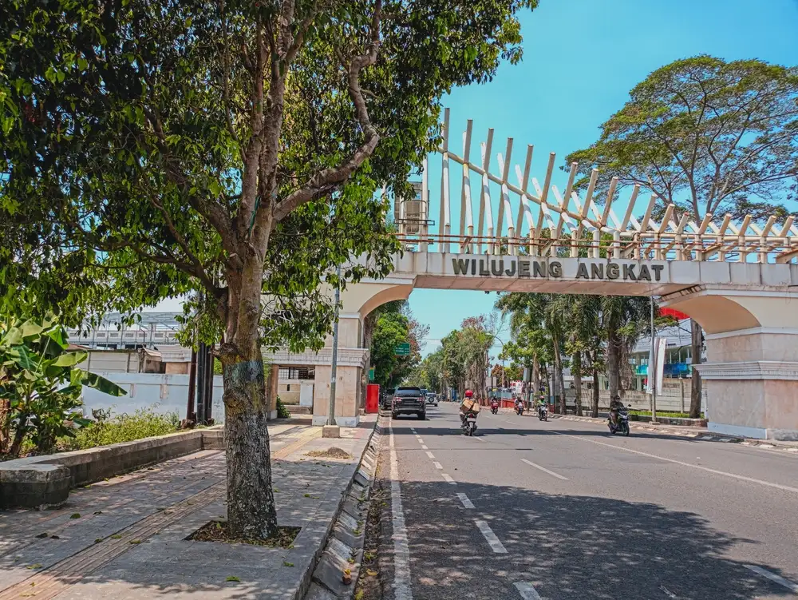

Kampung Adat Mahmud
(https://ik.imagekit.io/tvlk/blog/2024/09/shutterstock_2515387255.jpg)
Kampung Adat Mahmud adalah sebuah perkampungan adat yang terletak di RW 04, Desa Mekar Rahayu, Kecamatan Margaasih, Kabupaten Bandung. Kampung ini dikenal karena masyarakatnya yang masih memegang teguh adat istiadat dan tradisi leluhur, serta memiliki peran penting dalam penyebaran agama Islam di wilayah Bandung.
Sajarah Singget Kampung Adat Mahmud
Kampung Mahmud didirikan sekitar abad ke-15 oleh Sembah Eyang Dalem Haji Abdul Manaf, yang diyakini masih memiliki garis keturunan dari Syarif Hidayatullah (Sunan Gunung Jati). Sebelum mendirikan kampung ini, Eyang Abdul Manaf sempat menetap di Mekkah untuk memperdalam ilmu agama. Saat hendak kembali ke tanah air, beliau mendapatkan firasat bahwa negerinya akan dijajah oleh bangsa asing. Beliau pun berdoa di sebuah tempat dekat Masjidil Haram bernama Gubah Mahmud agar dapat kembali ke tempat yang bebas dari penjajahan. Setelah kembali, beliau menemukan lahan yang awalnya berupa rawa-rawa dan lahan kosong di dekat Sungai Citarum, yang kemudian diubah menjadi perkampungan dan dinamakan Mahmud, sesuai dengan tempat beliau berdoa di Mekkah
Aturan
- Henteu meunang nyieun imah permanén make témbok, kudu kai jeung bilik.
- Henteu meunang miara angsa, sabab sorana dianggap ngaganggu ketenangan ibadah.
- Henteu meunang maénkeun gamelan nu aya gong gedé, sabab dianggap teu saluyu jeung ajaran agama.
- Henteu meunang ngalakukeun hura-hura atawa acara hiburan nu dianggap teu pantes.
Fakta Unik
- Kampung ieu henteu kapangaruhan ku modernisasi sarta masih ngajaga kahirupan sederhana.
- Arsitektur imahna tradisional, henteu diwenangkeun make témbok beton.
- Tempatna dianggap sakral, sabab jadi pusat panyebaran Islam di wewengkon Bandung.
- Aya tradisi unik "henteu meunang miara angsa", sabab suaranya dianggap ngaganggu ketenangan ibadah.
Adat
- Rajaban – Peringatan Maulid Nabi Muhammad SAW.
- HHaul Eyang Dalem Haji Abdul Manaf – Acara doa pikeun ngalestarikeun ajaran leluhur.
- Muludan – Upacara tradisional pikeun ngagungkeun kelahiran Nabi Muhammad.